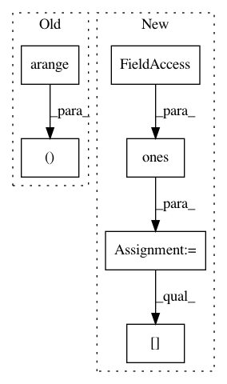

85e8cf0742048b55a20418441e4e9e51444c3f54,gpytorch/likelihoods/multitask_gaussian_likelihood.py,_MultitaskGaussianLikelihoodBase,_eval_corr_matrix,#_MultitaskGaussianLikelihoodBase#,76
Before Change
corr_factor = self.task_noise_corr_factor.squeeze(0)
corr_diag = self.task_noise_corr_diag.squeeze(0)
M = corr_factor.matmul(corr_factor.transpose(-1, -2))
idx = torch.arange(M.shape[-1], dtype=torch.long, device=M.device)
M[..., idx, idx] += corr_diag
sem_inv = 1 / torch.diagonal(M, dim1=-2, dim2=-1).sqrt().unsqueeze(-1)
return M * sem_inv.matmul(sem_inv.transpose(-1, -2))
After Change
def _eval_corr_matrix(self):
tnc = self.task_noise_corr
fac_diag = torch.ones(*tnc.shape[:-1], self.num_tasks, device=tnc.device, dtype=tnc.dtype)
Cfac = torch.diag_embed(fac_diag)
Cfac[..., self.tidcs[0], self.tidcs[1]] = self.task_noise_corr
// squared rows must sum to one for this to be a correlation matrix
C = Cfac / Cfac.pow(2).sum(dim=-1, keepdim=True).sqrt()
return C @ C.transpose(-1, -2)
In pattern: SUPERPATTERN
Frequency: 3
Non-data size: 6
Instances
Project Name: cornellius-gp/gpytorch
Commit Name: 85e8cf0742048b55a20418441e4e9e51444c3f54
Time: 2019-10-25
Author: balandat@fb.com
File Name: gpytorch/likelihoods/multitask_gaussian_likelihood.py
Class Name: _MultitaskGaussianLikelihoodBase
Method Name: _eval_corr_matrix
Project Name: biolab/orange3
Commit Name: 990f9586e2f72f4ab1bd4723247633aa35ca270f
Time: 2015-12-18
Author: janez.demsar@fri.uni-lj.si
File Name: Orange/widgets/data/owdatasampler.py
Class Name:
Method Name: sample_bootstrap
Project Name: GPflow/GPflowOpt
Commit Name: ee97f87f3d19aad4329fb012b2819d13b48c8fa3
Time: 2017-07-28
Author: ivo.couckuyt@ugent.be
File Name: GPflowOpt/pareto.py
Class Name: Pareto
Method Name: pareto2d_bounds